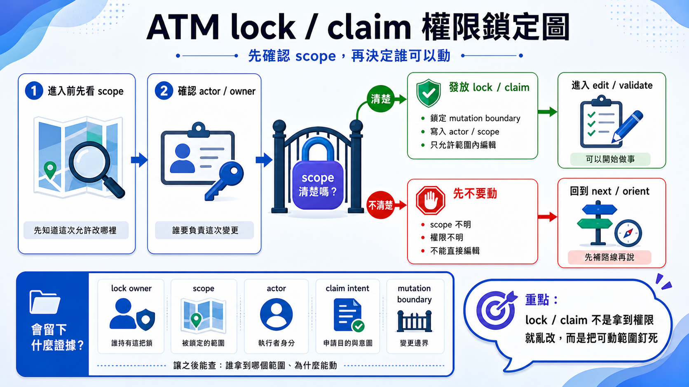

首頁 / 文章列表 / English version
ATM Governance · Visual Guide
用八張圖看懂 ATM 如何治理 AI Agent 工程鏈
當 AI 開始不只是一個助手，而是一群 Agent 一起改同一個 repo，真正困難的地方不再是「會不會寫程式」，而是「能不能穩定、可驗證、可回溯地交付」。
ATM 的核心不是叫人類記更多指令，而是讓 AI Agent 進入 repo 後，能自動學會本地 skill、讀懂任務意圖、取得邊界、驗證結果、留下證據，再把工作交接給下一個人或下一個 Agent。這八張圖可以視為 ATM 的治理地圖：從入口、健康檢查、鎖定、hook、git-head evidence，到 close 與 batch checkpoint。
先講結論：ATM 治理的不是 AI，而是 AI 的工程行為
很多人談 AI coding，會把注意力放在模型能力：哪個模型比較聰明、哪個 prompt 比較準、哪個 Agent 能一次改更多檔案。但當專案進入長期開發，問題會換一個形狀。你開始在意的是：它有沒有先理解任務？有沒有拿到合法範圍？有沒有跑驗證？失敗時能不能知道卡在哪？下一個 Agent 接手時，是否不需要重新猜前因後果？
對人類
你只描述目標，像是「修一個登入驗證 bug，並留下可 review 的 evidence」。ATM 的理想入口是讓 Agent 透過 skill 自動走治理流程，而不是要求你手背 CLI。
對 Agent
Agent 進 repo 後不應直接動手，而是先讀本地入口規則，透過 ATM next 判斷任務路徑，再按照 playbook、scope 與 validator 做事。
1. 先看全圖：ATM Governance Atlas
Figure 02
ATM governance atlas

如果只記一件事，就是 ATM 不想取代 Git、CI 或人類 review。它比較像是放在 AI Agent 和 repo 之間的治理緩衝層：Agent 想做事，先經過 route；要改檔，先有 scope；要結案，先有 evidence；要多人協作，先知道哪些工作會撞在一起。
2. next 是入口：先決定「這件事該怎麼走」
Figure 03
next entry decision

next 是 Agent 的第一個治理入口。它不只是問「下一步是什麼」，而是把使用者要求轉成可執行的 route、playbook、風險提示與必要前置條件。在 CLI-first 的世界，人類要記得先跑什麼、後跑什麼。在 skill-first 的 ATM 裡，這些應該變成 Agent 的習慣：使用者說出目標，Agent 透過 repo-local skill 進入 next，再依照回傳的 playbook 行動。這是防止 AI 自己腦補流程的第一道門。
3. doctor 是健康檢查：先知道 repo 能不能承受這次變更
Figure 04
doctor health check

doctor 不是形式檢查，它是在問：這個 repo 的治理狀態是否足以讓 Agent 安全工作？入口、integrations、runner、evidence、policy、git 狀態都可能成為早期警訊。AI 工程最怕的是錯誤太晚才出現。doctor 的價值在於把「等到 commit 才爆」的問題提前，讓 Agent 在修改之前就知道環境是否健康。對多 Agent 團隊來說，這等於把 repo 的交通號誌先亮出來。
4. lock / claim 是邊界：讓 Agent 先被任務收斂
Figure 05
lock and claim boundary

當 Agent 沒有邊界，它會很自然地把小修補擴成大整理，把 bugfix 寫成順手重構。ATM 的做法是先把任務關進合理的工作框，讓修改、驗證、證據都能對齊同一個範圍。
5. hook 是現場閘門：在 commit 前攔住不合規的工作
Figure 06
hook pre-commit gate

這一層是 ATM 很工程化的地方。它不是期待 Agent 自律，而是把規則放進 repo 的日常動作裡。當 AI 變多，靠提醒會累；靠 gate 才能穩。
6. git-head evidence：讓證據對得上真正的 HEAD
Figure 01
git-head evidence flowchart

AI 協作裡，最容易被忽略的是「證據新鮮度」。測試曾經通過，不代表現在這個 tree 通過。ATM 把 evidence 綁回 git head，是為了讓每次 close 都能回答：這份證據到底證明了哪一份程式碼？
7. taskflow close：不要只說完成，要能證明完成
Figure 07
taskflow close flowchart

taskflow close 把「我做完了」變成一個可驗證動作。它關心 scope、delivery、evidence、git head、closure packet，而不是只看 Agent 的口頭回報。這是 ATM 和一般聊天式協作最大的差異之一。一般 Agent 結束時會說「已完成」；ATM 要求它留下足以被檢查、被 audit、被下一個人接手的 closure。這種設計讓 AI 產出從對話變成工程紀錄。
8. batch checkpoint：多任務不是一次全吞，而是一個一個穩定前進
Figure 08
batch checkpoint flowchart

這個觀念很重要：多 Agent 並行不等於沒有節奏。batch checkpoint 讓大型工作保有節拍，降低「做很多但不知道哪個真的完成」的混亂，也讓 captain 或下一個 Agent 可以從清楚的 checkpoint 接手。
把八張圖串起來：ATM 的單一流程工程生產鏈
- 先 route：用
next把自然語言任務轉成治理路徑。 - 再檢查：用
doctor確認 repo、runner、integration 與 evidence 狀態。 - 取得邊界：用 lock / claim 讓 Agent 的工作範圍明確化。
- 現場攔截：用 hook 在 commit 前擋住缺 scope、缺 evidence 或違規操作。
- 綁定證據：用 git-head evidence 確認驗證結果對得上目前程式碼。
- 正式結案：用 taskflow close 讓「完成」變成可驗證 closure。
- 批次前進：用 batch checkpoint 把多任務拆成可接手的節點。
這就是 ATM 治理 AI 的方式：不要求 Agent 永遠聰明，也不假設 prompt 永遠完美，而是把它的工程行為放進一條可收斂、可驗證、可回溯的鏈裡。對人類來說，這才是多 Agent 合作真正能走遠的基礎。